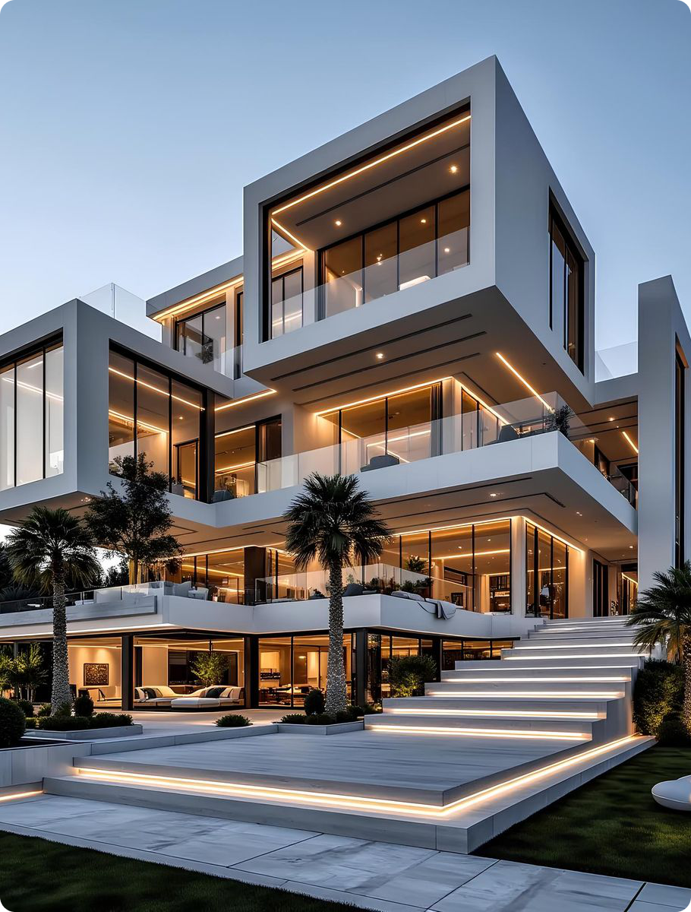
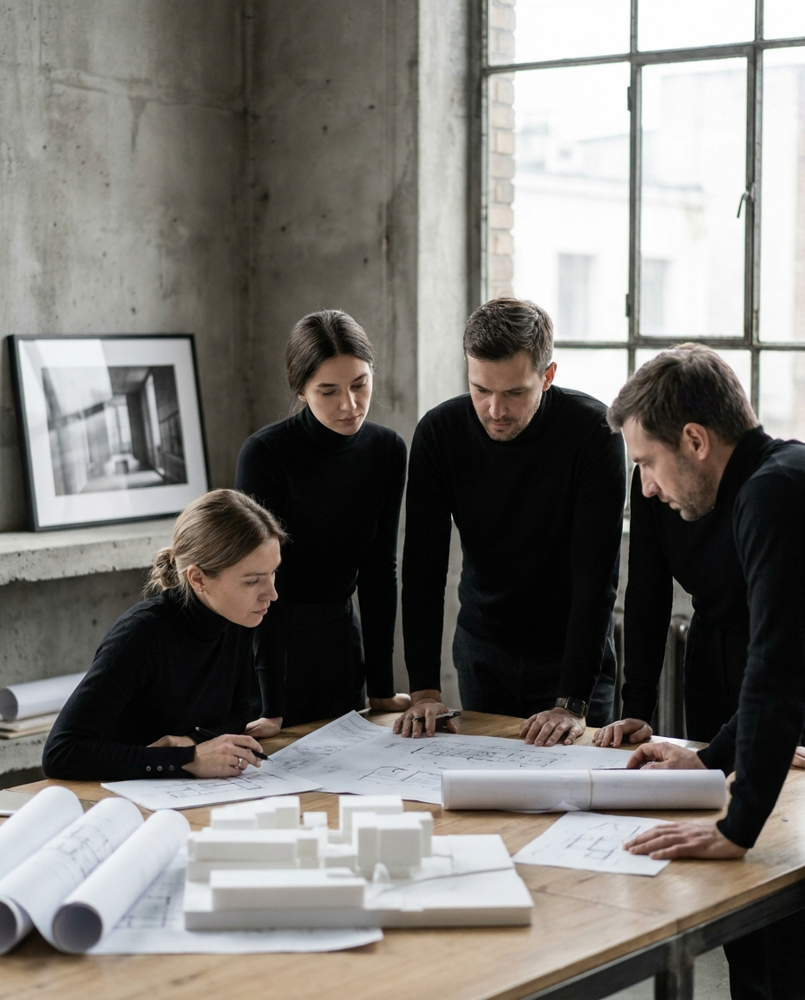

Lumen
Arch
Где спокойствие становится частью современной жизни
Услуги для частных объектов
Подробнее
проектируем сценарии жизни
Где спокойствие становится частью современной жизни
Листайте
Для нас важны контекст, материалы и смысл за каждой линией. Мы проектируем пространства, которые остаются актуальными спустя десятилетия.

Студия LumenArch · 2026Лента без начала и конца — как линия, которая не прерывается: от первого эскиза до сданного объекта мы ведём проект единым движением.
Пять реализованных объектов в четырёх странах. Тяните — кольцо вращается.
От концепции до рабочей документации. Каждая линия несёт смысл — форма рождается из контекста участка, света и сценария жизни.
Цифровой двойник здания на всех этапах — прозрачность вместо сюрпризов на стройке.
Берём объект от проекта до готового дома — вы получаете результат, а не набор подрядчиков.
Сопровождаем стройку до последней детали — замысел на бумаге и объект в реальности должны совпасть.
Дубай · Барселона
по договорённости